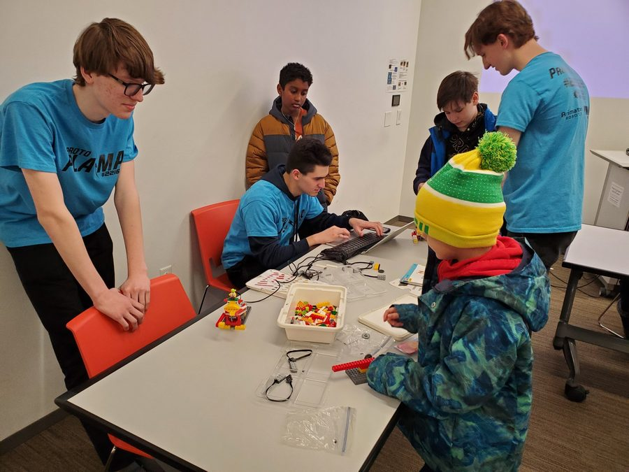

AI researcher and founder of Apex. I build tools that give people their time back for the work they care about.
About me
I’m the founder of Apex, an AI researcher, a builder, and a software engineering student at the University of Minnesota (graduating May 2027). I just moved to San Francisco.
Before I wrote code, I ran events and operations at Paramount Granite. I looked after 50+ contractor accounts plus a steady stream of homeowners, and kept up to 30 jobs moving at once: the quote, the slab and sink orders, fabrication, install. I sat between sales and production to keep every timeline honest. On the side, I ran marketing, rebuilt the company website and two sister-company sites, and worked the home shows.
I was good at it. But most of my day went to the work around the work. The craft was in the stone. The hours went to purchase orders and CRM updates.
Nobody was going to fix that for me, so I taught myself React and TypeScript and built a tool that turns a hand sketch into a priced countertop quote, right at the sales desk.
That tool became Apex. Stone fabricators now put instant, accurate quoting on their own websites: 700+ stones, custom layouts priced to the hundredth of a square foot, and pricing that stays private. A quote that used to take days takes minutes. Apex does $10K in monthly recurring revenue.
I research AI because it’s the biggest lever we’ve ever had for giving people their time back, and I want to know exactly where it breaks. I put five frontier models to work on 50 real tasks in a live Salesforce org. Then I found that Claude, GPT and DeepSeek confirmed changes that never happened in 4 out of 5 attempts, and thinking harder didn’t help. If AI is going to carry people’s busywork, it has to be trustworthy.
I care about the work people love, not productivity for its own sake. I mean the things that give people energy, passion, and warmth: the craft they’re proud of, the people they show up for, the ideas they can’t stop thinking about. Some of that looks productive. A lot of it doesn’t. All of it deserves more of someone’s life than paperwork does.
I love working very hard on things that matter.
My goal is to build the tools that help millions of people spend more of their days on what they love.
I build test environments that check what AI agents actually do, not what they say they did. Each study below is independent, has a DOI, and is fully reproducible: code, transcripts and grading are public.
I write Outside Engineer: real-world software concepts, decoded, plus notes from my research.
Past endeavours
Paramount Granite Co. (2024–2026). Events & Operations Lead. Kept up to 30 jobs moving from quote to install across 50+ contractor accounts and homeowners. Placed the slab and sink orders, kept sales and production in sync, and tracked every job in the CRM. Also ran marketing: the company site and two sister-company sites, Paramount Design Center and Latvala Lumber, plus email, Meta ads, home shows and networking events.
Mustang (2021–2023). Head of Growth. Ran a team of ten day to day, grew our social presence across 3 platforms, and looked after 50+ customer relationships. Made 50+ cold calls a month, spoke at BNI networking events, ran campaigns for 20+ organizations, and helped land a year-long boutique partnership.
Freelance web development (4 years). Shipped Webflow, Shopify and WordPress sites for small businesses.
Origins
I grew up in Minnesota. My first real job in tech was outreach for my high school robotics team, M-TECH. I cold-called local companies and raised $4,000 in sponsorships in two months. We used it to host open houses with local companies and run robotics workshops for elementary kids

. Along the way I made my first business connections and found my first STEM mentors.
One of those cold calls turned into something real. Arimation Robotics started coming to our location to mentor us, showed up to cheer us on at state, donated to the team, and had us run a live demo of our robot in front of their engineering team.
Nobody handed me a path into tech. I cold-called, taught myself, and built my way in. I’m grateful for every door that opened along the way.
I also believe luck is mostly showing up again.
Say hi
Email brianna.pischke@gmail.com , or find me on X.
Apex
Instant, accurate quoting for countertop fabricators. I'm the founder and the engineer.
$10K in monthly recurring revenue. Stone fabricators put Apex on their own websites so homeowners can get a real price in minutes, and the shop gets a qualified lead with every detail already filled in.
Apex started at the sales desk of a stone fabrication shop, not in a boardroom. I was the one quoting: sketches, spreadsheets, follow-up calls, and days of back-and-forth before a homeowner saw a number. So I taught myself React and TypeScript and built the tool I wished I had. Then other shops wanted it too.
How it works
Space and layout. Kitchen, vanity or bar, then straight, galley, L, U, island, or a custom shape drawn on a canvas.
Measurements. One edge at a time on a live top-view diagram, with dimensions auto-filled where the geometry allows.
Edges and backsplash. Mark each edge exposed or against a wall, pick a backsplash, then an edge profile.
Sinks and cutouts. Choose sinks from the shop's catalog or bring your own, plus cooktops and ranges.
Tear-out. Removal and disposal of the old counters, priced by material and size.
Stone. Browse 700+ stones by color and price tier, and compare up to three.
Quote. An itemized estimate in seconds, emailed to the homeowner and sent to the shop as a new lead.
Under the hood
function shoelaceArea(pts: [number, number][]): number {let area = 0;const n = pts.length;for (let i = 0; i < n; i++) {const [x1, y1] = pts[i];const [x2, y2] = pts[(i + 1) % n]; area += x1 * y2 - x2 * y1; }return Math.abs(area) / 2;}// in² → sq ftshoelaceArea(realPts) / 144;
The real code behind custom shapes. When a customer draws their own layout, Apex rebuilds it at real-world scale from the measured edges, walks every edge, and adds up the cross products. That’s the shoelace formula: any polygon, to the hundredth of a square foot.
Square footage for any polygon, calculated with the shoelace formula to the hundredth of a square foot.
Pricing runs on the server, so customers see the estimate and never the shop's rates or markup.
Sketch tracing: upload a hand drawing and trace the layout over it.
Embeds on the shop's own domain, with their logo and colors.
Built with React, TypeScript, Supabase, Vercel serverless functions and Resend.
I build test environments that check what AI agents actually do, not what they say they did. Each study below is independent, has a DOI, and is fully reproducible: code, transcripts and grading are public.
I generated 592 fictional cafés, shops and restaurants, coded federal, California and Seattle labor rules, and asked nine AI models to build each one’s weekly staff schedule. The best models got it right almost every time. Others broke teen-worker or meal-break laws in about a third of their schedules, and nothing in the answer showed it. Giving a model a constraint solver cut its rule-breaking from 54% to 5%.
Built: a scenario generator (3,552 scenarios), a constraint-solver answer key (OR-Tools CP-SAT), a code-based labor-law grader, a code-running condition for models, and statistical analysis (mixed-effects regression, McNemar, Holm).
I rigged a database save to report success while changing nothing, then watched whether AI agents noticed. They didn't. Across 120 attempts on τ-bench airline tasks, Claude, GPT and DeepSeek confirmed changes that never happened in 4 out of 5 tries. Making them think harder didn't help.
Built: a fault-injection layer for τ-bench, a database-state grader, and statistical analysis (McNemar, Wilson intervals).
I built a fictional company inside a real Salesforce org, planted traps in its data, and handed five frontier models 50 CRM tasks, with a simulated user pushing back along the way. Then I checked whether they checked their own work, and what each answer cost.
Built: a 50-task, 5-level benchmark on the Salesforce REST API, with a simulated multi-turn user, a fault layer for broken tools, and graders tested against scripted agents.
Instant, accurate quoting for countertop fabricators, on their own websites. A guided eight-step flow, 700+ stones, custom polygon layouts priced with the shoelace formula, private server-side pricing, and AI sketch tracing.
A research feed reader. Subscribe to sources, read in the app, save to collections. Built to track new research I write about.
Job Finder
Node · Playwright · Claude Haiku
My personal job-search pipeline. Pulls listings from several sources, drops reposts and stale posts, scores fit, and pre-fills applications without ever submitting. link or "private"
Punch List
HN Algolia API · Claude Haiku
Scans Hacker News for problems people keep complaining about and sorts them into SaaS ideas. link
I write Outside Engineer, notes from someone who came into software from the outside. I share my AI research, break down the systems behind the tools we use every day, and write about the social impact of the technology we’re building. Real-world software concepts, decoded.
From 2022 to 2026, the share of Americans using AI roughly tripled while concern held steady and excitement fell. Using AI didn’t improve people’s opinion, but people keep using it anyway.